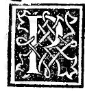

Chapter XX: Superimposed Columns, the 1498 Sforza Disputation, and Venetian Colophon¶
On Columns Placed Above Other Columns in Multi-Story Buildings (Vitruvius Book V), the 1498 Disputation in the Castello Sforzesco with Count Onofrio Paganini of Brescia, and Colophon of the 1509 Venice Edition.

Because up to this point we have spoken only of columns standing on the ground floor, it remains to explain how columns placed in a second story above other columns (colonne situate sopra altre colonne, as in two-story cloisters, loggias, and basilicas—such as the noble cloister of our convent of Santa Croce in Florence and many other buildings in Italy) must be proportioned both for structural stability and for visual grace.
Rule for Superimposed Upper Columns and Parapets (Vitruvius V.1.3–5)
Our Vitruvius makes this clear in his fifth book (V.1.3–5), whose Latin words we first quote verbatim:
Columnae superiores quarta parte minores quam inferiores sunt constituendae, propterea quod oneri ferendo quae sunt inferiora firmiora debent esse quam superiora; non minus quod etiam nascentium oportet imitari naturam, ut in arboribus teretibus, abiete, cupresso, pinu, e quibus nulla non crassior est ab radicibus, deinde crescendo progreditur in altitudinem naturali contractura peraequata nascens ad cacumen. Ergo si natura nascentium ita postulat, recte est constitutum et altitudinibus et crassitudinibus superiora inferiorum fieri contractiora… Pluteum quod sit inter superiores et inferiores columnas item quarta parte minus quam superiores columnae fuerint oportere fieri videtur, uti supra basilicae contignationem ambulantes ab negotiatoribus ne conspiciantur.
Upper Columns Diminished by One-Fourth (:math:`frac{3}{4}` of the Lower Columns): The upper columns placed in a second tier above the lower columns must be made one-fourth (:math:`frac{1}{4}`) smaller both in height and in thickness than the lower columns beneath them:
\[\text{Height}_{\text{upper}} = \frac{3}{4}\,\text{Height}_{\text{lower}}, \qquad \text{Diameter}_{\text{upper}} = \frac{3}{4}\,\text{Diameter}_{\text{lower}}\]First, because the lower columns must bear a far greater load (carrying both the second story and the roof) and therefore must be stronger and thicker than the upper columns; Second, because Architecture must imitate Nature in growing things (nascentium oportet imitari naturam): in tall, straight-tapering trees such as the fir (*abiete*), cypress (*cupresso*), and pine (*pinu*), every trunk is thickest at the roots and tapers upward by a natural contraction (naturali contractura) toward its summit!
Why Art Uses the Rational Fraction :math:`frac{1}{4}` to Imitate Nature’s Secret Ratio (Plato’s *:cite:`Timaeus <plato:timaeus:53c-56c>`*): Notice how wisely Vitruvius proceeds: in a living tree, the exact natural ratio of the upper branches to the lower trunk is an irrational secret known only to God—as Plato says in his Timaeus (53d):
Haec enim soli Deo nota sunt, atque ei qui Dei sit amicus (“For these ultimate principles are known to God alone, and to whatever man is a friend of God”).
Therefore, so that human artifice (ars imitandi naturam in quantum potest) may not grope blindly in the dark (a tastoni), Vitruvius assigns a definite, rational proportion expressible in numbers, namely one-fourth (:math:`frac{1}{4}`) less!
The Parapet (*Pluteum*, :math:`frac{1}{4}` Less Than the Upper Columns): Similarly, the solid balustrade or parapet (pluteum) placed between the lower and upper columns is made one-fourth less (or proportioned to the upper order) so that those walking along the upper gallery of the basilica are not seen from below by the merchants transacting business on the floor.
Strict Vertical Plumb Alignment (*:term:`Perpendiculare <catheto>`*) with the Subterranean Stereobate: Above all, take care that the axes of the upper columns stand dead plumb (*aponto sopra a livello / in :term:`perpendiculare <catheto>`*) over the axes of the lower columns, their stylobates, and their subterranean stereobate foundations! For if the upper columns were set out of plumb (fora dela :term:`perpendiculare <catheto>`) with the lower columns, the overhanging weight would shear the entablature and bring the entire edifice crashing down in ruin!
The 1498 Disputation on Vitruvius in the Camera dei Moroni (Sala delle Asse) of the Castello Sforzesco in Milan
This noble authority of Vitruvius, my dearest disciples, was publicly expounded in 1498 in the impregnable Castello Sforzesco of Milan, in the chamber called the Camera dei Moroni [the famous Sala delle Asse, painted by Leonardo da Vinci with intertwined mulberry trees (moroni) in honor of Ludovico il Moro!], in the presence of:
The Most Excellent Duke Ludovico Maria Sforza;
His brother-in-law the Most Reverend Cardinal Ippolito d’Este;
The Illustrious Signor Galeazzo Sanseverino, my particular patron; and
Many other famous lords and scholars, among whom the eminent Doctor of Both Laws (Utriusque Iuris Doctor), Count, and Knight Messer Onofrio de’ Paganini of Brescia, called de’ Cevelli (M. Onofrio de Paganini da Brescia detto de Ceveli), expounded this very passage of Vitruvius before the whole assembly with such eloquence that one would have thought he had been nourished on Vitruvius from his cradle (a cunabulis), inspiring in everyone present the deepest love for our Vitruvius!
Let this suffice for the present until our larger promised work, with the help of God. Fare you well, and pray to God for me! FINIS.
Colophon of the 1509 First Printed Edition (Venice, June 1, 1509)
Printed at Venice by the upright man Paganino de’ Paganini of Brescia (*Venetiis impressum per probum virum :person:`Paganinum de Paganinis <paganino-de-paganini>` de Briscia*). With a public decree of the Venetian Senate that no one in this city or throughout the entire Venetian Dominion may print or cause this work to be printed, or import copies printed elsewhere under any pretext, for the space of fifteen years (*annorum XV curriculo*), under the penalties contained in the said privilege. In the Year of Our Redemption M.DIX [1509], on the Kalends of June [June 1, 1509], while Leonardo Loredan governed the Venetian Republic, in the Sixth Year of the Pontificate of Pope Julius II.